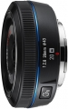

器材库 > APS画幅镜头 > NX 20/2.8 i-Fn

详细规格
镜头类型
广角镜头
发布日期
2010-09-14
焦距
20mm
等效35mm画幅焦距
30.8mm
最大光圈
f/2.8
最小光圈
f/22
镜头结构
6片/4组
非球面镜片
1片
最近对焦距离
17cm
滤镜口径
43mm
镜头卡口
Samsung NX
防抖
否
颜色
黑色
尺寸
62.2×24.5mm
重量
89g
dreamwave2011-06-20 20:184.58 分
操作性 5.00耐用性 4.50性价比 5.00解像力 4.50色彩还原 4.50机械结构 4.00
产品图 / 样片
三星 i-Fn 20/2.8
评测 / 相关文章
- ［资讯］单电与i-Fn镜头领衔 三星P&E展台报道 （存档）
- ［资讯］三星官方公布2011年NX镜头产品线详情 （存档）
- ［资讯］三星2011年亚洲市场NX系列产品线曝光 （存档）
- ［资讯］三星2011-2013年NX镜头路线图新鲜出炉 （存档）
- ［资讯］三星“i-Function”智能镜头解析 （存档）
- ［资讯］三星新款单电相机NX100发布 （存档）